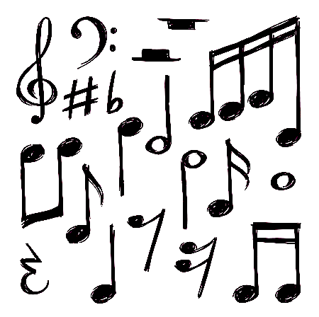
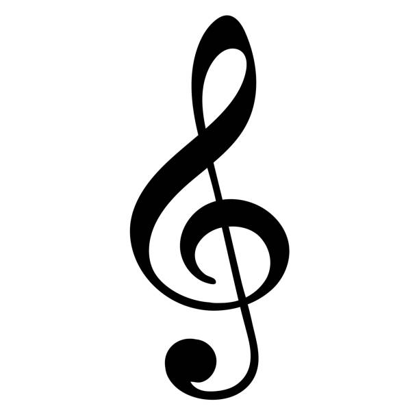
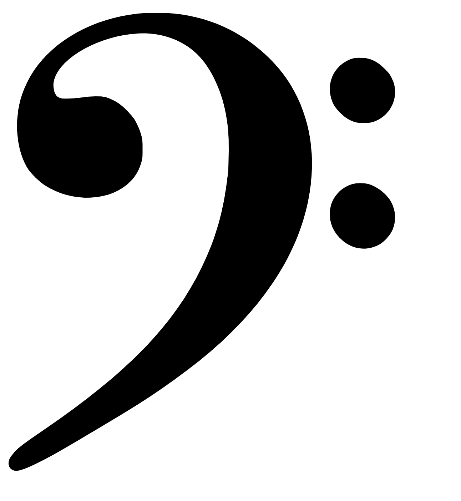

Learn
You might have seen these symbols before, but don’t know what mean? Well now you will learn!
Music is a deep knowledge, and we are only scratching the surface on this website. But the things you will learn here are the most important things. Let’s take a look.
A melody consists of notes played after each other. Each note has its place on something called the stave.
You can think of the stave like roads for cars; a melody rides from left to right, up and down the stave, and sometimes goes off it aswell! If the note is off the stave, don’t worry - there are help-lines to help you see which note it is.
The higher the note the higher the pitch of the note. The same goes for low notes, the lower the deeper.
Here is a very high note:
And here is a very low note:
For high notes, we use a symbol called a treble clef. These notes usually played by the right hand of a piano player; the further right the key is, the higher the note.
For low notes, the symbol is called the bass clef. This symbol means that the notes are lower. Pianists play these notes with their left hand, as the notes get lower the further left you go on the piano.
The spaces and lines are how we identify which note is being played. For example, middle C is on the first help line above the bass clef stave and one help line below the treble clef stave.
The spaces and lines are how we identify which note is being played. For example, middle C is on the first help line above the bass clef stave and one help line below the treble clef stave.
Octaves
There are only 12 notes but a piano has 88 keys - how does that add up?
The notes repeat as you go up, or down. When you come to B, the next note is C and then the cycle repeats once more. The distance between C1 and C2 is one octave. They sound very similar - but not the same. That is because the C above it is one octave higher in pitch.